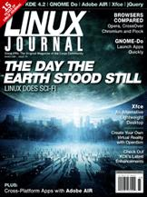

Shutdown Archive web server
Search:
Linux Journal
Issue #179/March 2009

Features
Fast App Launching with GNOME Do
by Kyle Rankin
Use GNOME Do and its many plugins to extend desktop functionality.
Xfce: the Third Man
by Federico Kereki
The “other” desktop environment.
Browser Battles: Opera, CrossOver Chromium and Flock
by James Gray
Stuck on Firefox? You may find fulfillment in an alternative browser.
AIR Out Your Desktop with Adobe
by Shawn Powers
Desktop apps for everyone.
Indepth
The Day the Earth Stood Still
by Robin Rowe
Visual effects with Linux.
Run Your Own Virtual Reality with OpenSim
by Bill Childers
Make your own reality, virtually.
Columns
Shawn Powers' Editorial
Celebrating 15 Years of
Linux Journal
Reuven M. Lerner's At the Forge
jQuery Plugins
Marcel Gagné's Cooking with Linux
The Evolution of the Desktop—How Far from the Pinnacle?
Dave Taylor's Work the Shell
Counting Words and Letters
Mick Bauer's Paranoid Penguin
Mental Laziness and Bad Dogma to Avoid
Kyle Rankin's Hack and /
When Disaster Strikes: Hard Drive Crashes
Doc Searls' EOF
The Most Personal Device
Departments
From the Editor
Letters
upFRONT
New Products
New Projects
Archive Index
Shutdown Archive web server
Search:
Copyright © 1994 - 2018
Linux Journal
. All rights reserved.